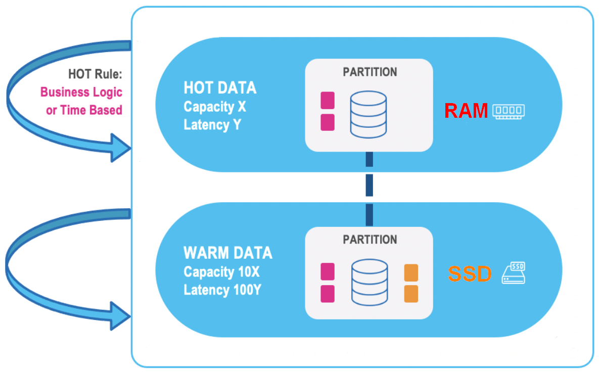

Tiered Storage stores data in a permanent repository. The data can be saved when the tiered storage is undeployed, and restored when it is redeployed.
The initial loading of data into each tier can be a time-consuming process, starting with the System of Record or other external data sources. Additionally, data in both tiers can be updated during the normal course of operations during the day.
During the normal use of Tiered Storage, priority data is stored in the Hot tier, and other data is stored in the Warm tier:

For an explanation of Tiered Storage and instructions for configuration, see
Using data persistency, data in both tiers is stored in a system repository. When the data is undeployed, the user has an option to persist the data. Subsequent redeployment of the data is performed at optimum speed.
The undeployed services can be viewed using the GET /pus/undeployed REST API.
An example of sample output is shown below.
[
{
"name": "tiered-space",
"unDeployedAt": "2021-08-03T14:14:22.787",
"isPersistent": true,
"gracefulShutdown": true,
"lastPrimaries": [
{
"partitionId": 1,
"instanceId": "1_1"
}
],
"spaceInstancesHosts": [
{
"instanceId": "1_0",
"host": "127.0.1.1"
},
{
"instanceId": "1_1",
"host": "127.0.1.1"
}
],
"schema": "partitioned",
"numOfInstances": 1,
"backupsPerPartition": 1
}
]
The number of backups per partition is zero or one.
The data of undeployed services can be deleted using the DELETE /pus/undeployed/{id} REST API.
Tiered Storage is implemented by parameters coded in the XML file for the Space. The relevant sections of the XML file are shown below.
The following XML specifies that for the table named Order, the orderTime field will be compared to the current time. For records where the orderTime field is within 24 hours of the current time, the record will be in Hot storage and Warm storage. After that time, it will be in Warm storage only.
<os-core:tiered-storage>
<os-core:tables>
<os-core:table name="com.mycompany.app.model.Order" time-column="orderTime">
<os-core:cache-rule period="PT24H"/>
</os-core:table>
</os-core:tables>
</os-core:tiered-storage>
The following XML specifies that for the table named Customer, the club field will be compared to the string "PLATINUM". Matching records be in Hot storage and Warm storage. Other records will be in Warm storage only.
It also specifies that for the TransientCustomer table, all data will be stored in Hot storage only.
<os-core:tiered-storage>
<os-core:tables>
<os-core:table name="com.mycompany.app.model.Customer">
<os-core:cache-rule criteria="club = 'PLATINUM'"/>
</os-core:table>
<os-core:table name="com.mycompany.app.model.TransientCustomer" transient="true"/>
</os-core:tables>
</os-core:tiered-storage>
Following is a summary of XML parameters.
| XML Parameter | Meaning |
tiered-storage | Beginning of Tiered Storage definitions for a Space |
tables | Beginning of list of tables |
table name=name-of-table | Tiered rule for a table (object type) |
time-column=name-of-field | Name of the field (property) in the table that will be evaluated for eviction from RAM. Must be of Java type TimeStamp, Long or Instant. |
period=period | After the period amount of time has passed, it will be removed from Hot storage (RAM). period must be a format supported by the Java Duration class.Examples: PT15M (15 minutes)PT20S (20 seconds) |
cache-rule criteria="fieldname operator value" | Rule to determine which data to place in Hot storage. Examples:
|
transient=true|false | Specify if the data is in the Hot tier only. Default is transient=false. |
period=timevalue | The Hot tier eviction rule. Data failing this rule will be removed from the Hot tier (but will still be in the Warm tier). timevalue can be any value that is a valid for the parse method of a Java Duration object. |
Tiered Storage is implemented by setting parameter values in the Java code definition for the Space. Relevant parts of the Java code are shown below.
The following Java code specifies that for the table named Customer, the club field will be compared to the string "PLATINUM". Matching records will be stored in Hot storage and Warm storage. Other records will be in Warm storage only.
It also specifies that for the TransientCustomer table, all data will be stored in Hot storage only.
In addition, records in the Purchase table will be stored in Hot and Warm storage for 30 seconds. After that time, they will be stored in Warm storage only.
@Override
protected void configure(EmbeddedSpaceFactoryBean factoryBean) {
super.configure(factoryBean);
TieredStorageConfig tieredStorageConfig = new TieredStorageConfig();
Map<String, TieredStorageTableConfig> tables = new HashMap<>();
tables.put(Customer.class.getName(), new TieredStorageTableConfig().sethame(Customer.class.getName()).setCriteria("club = 'PLATINUM'"));
tables.put(TransientCustomer.class.getName(), new TieredStorageTableConfig().setName(TransientCustomer.class.getName()).setTransient(true));
tables.put(Purchase.class.getName(), new TieredStorageTableConfig.setName(Purchase.class.getName().setTimeColumn("orderTime").setPeriod(Duration.ofSeconds(30)));
tieredStorageConfig.setTables(tables);
factoryBean.setTieredStorageConfig(tieredStorageConfig);
Following is a summary of the relevant Java code.
| Code | Meaning |
| Customer.class.getName()).setCriteria("club = 'PLATINUM'") |
Rule to determine which data to place in Hot storage. Note that the |
| TransientCustomer.class.getName()).setTransient(true) | Rule to determine which data is in Hot storage only. In this example, all data in the TransientCustomer table is stored in Hot storage, but not in Warm storage. |
| Purchase.class.getName().setTimeColumn("orderTime") .setPeriod(Duration.ofSeconds(30)) |
Rule to specify the amount of time that certain data will be in Hot storage. In this example, for the Purchase table, the orderTime fields will be kept in Hot storage for 30 seconds. |